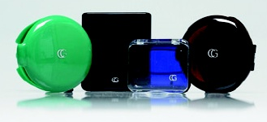
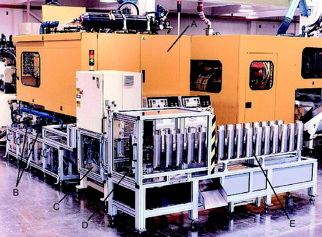
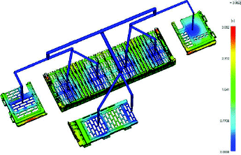
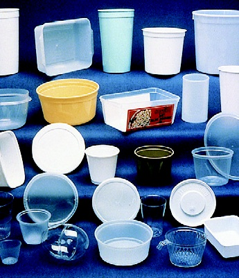
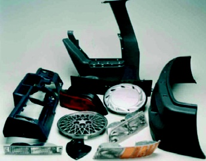

|
RENK
UYUMU ÝÇÝN AÝLE KALIPLARI
Bir
seri yada çift olarak satýn aldýðýmýz, özellikle renkli plastiklerden
imal edilmiþ ürünlerin hepsi, ayný renkte midir? Plastik malzemelerin
ve renklerin, hep homojen ve ayný oranda karýþtýrýlmasý gerekir.
Fakat plastik hammadde, katýþýklar ve boyalarý, büyük çuvallarda
ve kasalarda tedarik edilir. Karýþým oranlarýný ve toleranslarýný
belirten þartnameler olmasýna raðmen, küçük renk farklýklarýnýn
olmasý kaçýnýlmazdýr. Daha büyük karýþtýrma mikserlerinde
ve daha uzun süre karýþtýrmak, homojen karýþým elde etmemiz
için daha mantýklý görünse de bu yöntem pratikte her zaman
uygulanamamakta ve ekonomik olmamaktadýr. Eðer bir ürün çiftinin,
mükemmel renk uyumu zorunlu ise bu ürünlerin tek bir aile
kalýbýnda, ayný anda basýlmasý en uygun çözüm yöntemidir.

Resim 8: Mükemmel renk uyumu için yapýlan aile kalýplarýna
örnekler
Örnek
bir uygulama, bayan makyaj kutularýdýr. Aynanýn bulunduðu
kapak ile makyaj malzemesinin bulunduðu kutunun arasýnda renk
farkýnýn olmamasý istenir. Mükemmel renk uyumu için yapýlan
aile kalýplarýnýn, teknik ve medikal alanda da yaygýn bir
kullaným sahasý vardýr. Beraber kalýplanan ürünler, kalýplandýktan
sonra ayrýlmalarý gerekiyorsa, ya hemen montajlanmalý yada
beraber paketlenmelidir. Renk farklýlýðý oluþmamasý için,
bir sonraki baskýlarla karýþtýrýlmamalýdýr.
KALIP
ÝÇÝNDE MONTAJ YAPABÝLEN AÝLE KALIPLARI
Kalýp
içinde montaj yapabilen aile kalýplarý, kompleks bir yapýya
sahiptirler. Genellikle çok yüksek üretim adetli ürünlerde
ve nadiren kullanýlýrlar. Kova ve sapý gibi, konteynýr ve
kapaðý gibi, iki farklý fakat bir birisine montajlanacak parçalar
ayný kalýp içerisine yerleþtirilir. Enjeksiyon esnasýnda,
kalýp içerisinde bazý özel hareketler sayesinde ürünler bir
birlerine montajlanýr. Bu tarz kalýplamanýn, çevrim süresi
daha uzun olmasýna raðmen, montaj iþçiliðini ortadan kaldýrmasý
en büyük avantajýdýr.
SONRAKÝ
MONTAJ BASAMAÐINI KONTROL ETMEK ÝÇÝN KULLANILAN AÝLE KALIPLARI
Bu
metot sadece, yýllýk ihtiyaç sayýsý çok yüksek olan parçalarda
ve üretim boyunca, ürün tasarýmýnda hiçbir deðiþikliðin yapýlmayacaðý
durumlarda kullanýlýr.
Özel
tasarýmlý enjeksiyon makinelerinde yada bitiþik enjeksiyon
makinelerinde ve genellikle çift yada daha fazla katlý (stack
yad tandem) kalýp sistemleri kullanýlarak yapýlýrlar. Makinelerden
birisinde bir ürün, ötekisinde ise diðer montaj parçasý kalýplanýr.
Kalýplardan çýkan ürünler robot kollar yardýmý ile yada mekanik
olarak, taþýyýcý bantlar üzerine yerleþtirilerek, montaj istasyonuna
taþýnýr. Montajý biten ürün çiftleri, üst üste istenilen sayýda
dizilerek, sevk edilmeye hazýr hale gelirler.
Þekilde
özel tasarýmlý enjeksiyon makinesinde imal edilen CD kutusu
ve kapaðý gösterilmektedir. Ürün, makine kapaklarý(A) sayesinde,
dýþ etkenlerden korunur. CD kutusu ve kapaðý 8'er gözlü kalýplardýr.
Taþýma bantlarý (B), kalýplanan ürünleri, montaj istasyonuna(C)
taþýr. Bundan sonra montajlanan parçalar, istiflenme istasyonuna
(D) geçerler .Üst üste dizilen parçalar(E), elle alýnarak
paketlenir ve kolilenir.
Bu
sistemin çevrim süresi 3,5s'dir. 2*8 gözlü kalýpta saatteki
üretim sayýsý 8.200 adet montajlý parçadýr.

Resim 9: CD kutusu ve kapaðý basýp, daha sonra montajlayan,
çift enjeksiyon makinesi ve komple sistem (Firma: Husky)
YOLLUK
GÝRÝÞÝNÝN YERÝ NEREDE OLMALIDIR?
Plastiðin,
kalýp boþluðuna girdiði yere, yolluk giriþ noktasý (gate)
denir. Genellikle ürün tasarýmcýlarý, yolluk giriþ noktasýný
belirtirler. Fonksiyonel olarak en uygun yer, yolluk giriþ
noktasý olarak seçilmelidir. Yolluk giriþ noktasý hem görünüþü
bozarak estetik bir problem yaratmamalý hem de ürünü kullanýlmasýna
engel olmamalýdýr.
Bardak,
sürahi, saklama kabý v.b. ürünlerin tabanýnda düþünülen yolluk
giriþi, iyi tasarlanmadýðýnda, ürünün zemine oturmasýna engel
olabilmekte ve estetik açýdan sorun yaratan bir görüntü oluþabilmektedir.
Bazen
ürün tasarýmcýsýnýn, yolluk giriþ noktasý için belirlediði
yerler, ürün özellikleri dikkate alýndýðýnda, kalýp boþluðunu
en az basýnçla ve en az sürede doldurmak için en iyi yerler
olmayabilir. Böylesi kritik kararlarýn alýnacaðý zamanlarda,
ürün tasarýmcýlarý ile kalýp tasarýmcýlarý fikir alýþ veriþinde
bulunmadýrlar. Plastik akýþ analizleri yapabilen bilgisayar
programlarý, en iyi yolluk giriþ noktasýnýn yerini belirlemekte,
tasarýmcýlara yardýmcý olmaktadýr.

Resim 10: Plastik akýþ analiz programý ile yolluk giriþ yerleri
bulunmuþ bir ürün
YUVARLAK
VE DÝKDÖRTGEN ÞEKÝLLÝ ÜRÜNLERDE YOLLUK GÝRÝÞ NOKTASININ YERÝ
Genellikle
yuvarlak yada dikdörtgen þekilli ürünlerde, yolluk daðýlýmýnýn
eþit olmasý için, en iyi yolluk giriþi noktasý, ürün tabanýnýn
merkezidir. Ýki yada daha fazla göz sayýlý kalýplarda, 3 plakalý
(soðuk yolluk daðýtýcý plaka) yada sýcak yolluk kullanýlmasý
zorunludur. Her iki yöntemde, kalýp maliyetini artýran yöntemlerdir.
Yolluk giriþ noktasýnýn yeri, akýþkanýn yüksek sýcaklýða,
yüksek enjeksiyon basýncýna ve soðutma suyunun ýsýsýna maruz
kalacaktýr. Yolluk giriþ noktasýnýn yeri, çevrim süresini
de etkileyeceði için, ürün maliyetini de etkileyecektir. Sýcak
yolluk memesi kullanýmý, yolluk giriþ noktasýndaki gerilmeleri
azaltýr.
Ýki
plakalý kalýplar, sadece yüksek et kalýnlýðý olan, yuvarlak
ve dikdörtgen þekilli ürünlerin kalýplanmasýnda, kalýp öpüþme
yüzeyinden, yaprak yolluk giriþli yada iðne yolluk giriþli
olarak kullanýlabilir. Ýnce cidarlý ürünler için kullanýlamazlar.

Resim 11: Yuvarlak ve dikdörtgen þekilli ürünler
DÜZ ÜRÜNLERDE YOLLUK GÝRÝÞ NOKTASININ YERÝ
Düz
ürünler, yuvarlak ve dikdörtgen ürünlerin dýþýnda kalan, yolluk
giriþ noktasý için bir merkez nokta bulunmayan ürünler olarak
tanýmlanýr. Düz ürünler, içerisinde kýsmen düz alanlar içersede,
bir çok kavisli bölgeyi de ihtiva ederler. Otomotiv sektörü
ürünleri bunlara en güzel örneklerdir. Düz ürünlerde yolluk
giriþ noktasý, genellikle kenarlar üzerinde seçilir. Böylece
daha dayanýklý bir ürün elde edilir. Yolluk giriþ noktalarýnýn,
ürünün diðer bölgelerine göre daha zayýf kaldýðý unutulmamalýdýr.
Parçanýn ortasýnda estetik bir kusur yaratacak yolluk giriþ
noktasý izi de kalmamýþ olur. Yolluk giriþi feder veya kalýp
boþluðu boyunca devam eden bir yüzeye verildiðinde, plastik
akýþý, yuvarlak ve dikdörtgen kesitli ürünlere göre, çok düþük
basýnçlarda saðlanabilir.
Yuvarlak
ürünlerde olduðu gibi, kalýp boþluðunun daha hýzlý doldurulabilmesi
ve kalýptan çýkan üründeki çarpýlmanýn azaltýlabilmesi için,
yolluk giriþlerinin ürün merkezlerinde olmasý gerekir.

Resim 12: Otomotiv sektörü ürünleri
Kaynaklar:
Not:
Bu raporu MS Word formatýnda indirmek için týklayýnýz
(2,3MB)
|